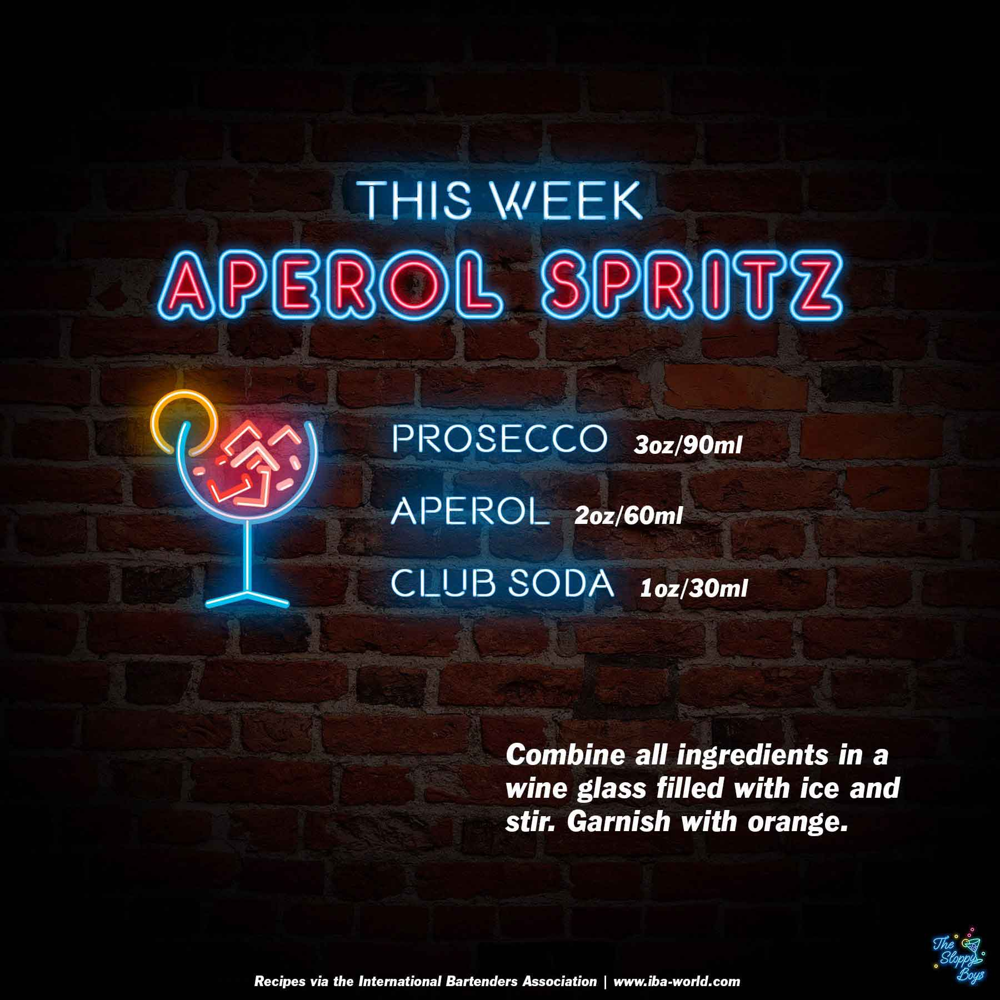

Sloppy Drinks
Podcast
About

Aperol Spritz
Ingredients
Prosecco (3oz/90ml)
Aperol (2oz/60ml)
Club Soda (1oz/30ml)
Steps
Combine all ingredients in a wine glass filled with ice and stir.
Garnish with orange.
Notes
Episode 24 - Aperol Spritz (April 2, 2021)
IBA Aperol Spritz Recipe
Artwork by The Sloppy Boys